FDOG
WHY THIS NOT CHANGED???
14.05.2018
Vinh Tran
Background
BSc in Biotechnology
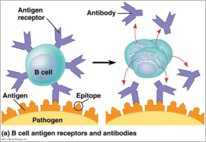
- Prediction of B cell epitope on H5N1 virus
MSc in Bioinformatics
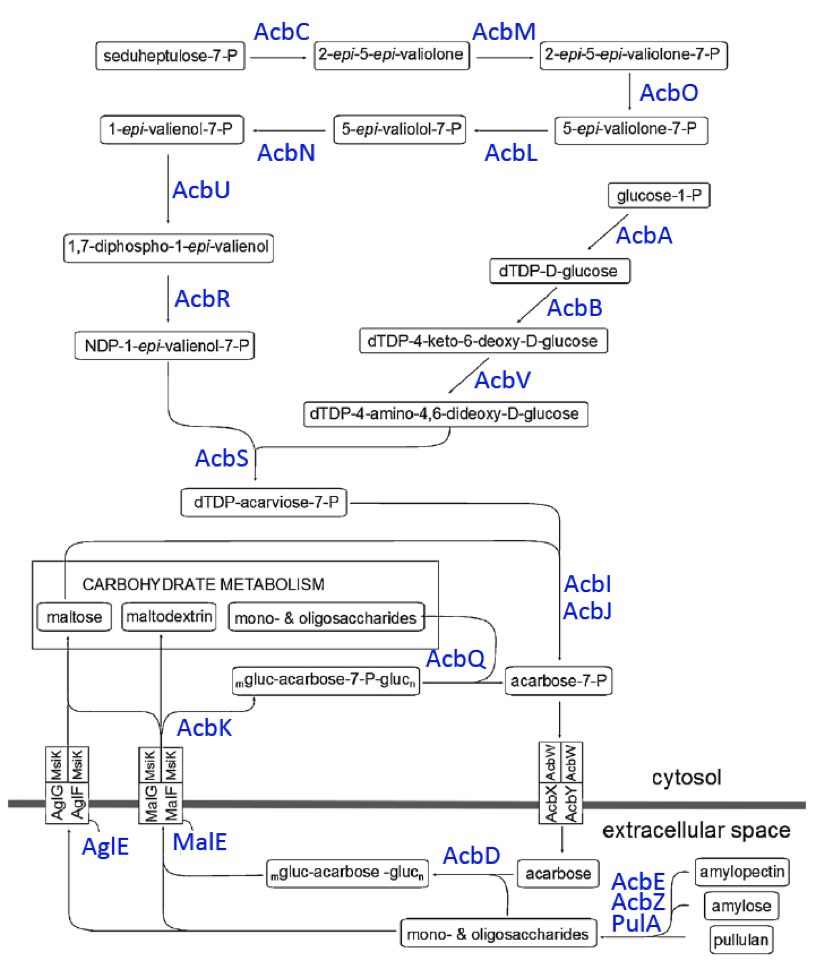
- Reconstruction of Actinoplanes sp. 50/110 metabolic pathways
PhD student in Applied Bioinformatics
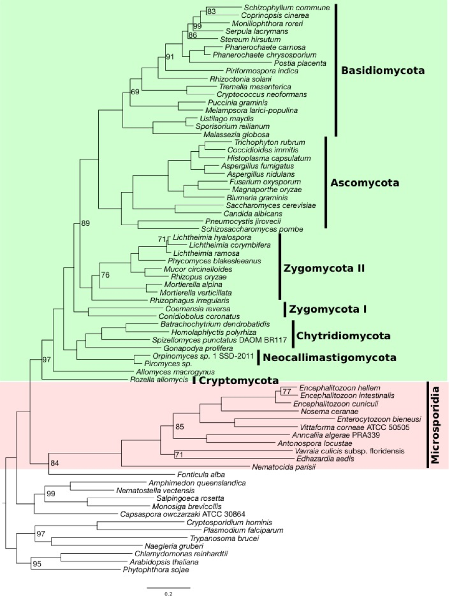
- Phylogenetic analysis of Microsporidia
Introduction
Phylogenetic profiles

Presence/absence pattern of genes across a set of taxa
- transfer functions between genes
- trace functional protein clusters or metabolic networks across species
Input file
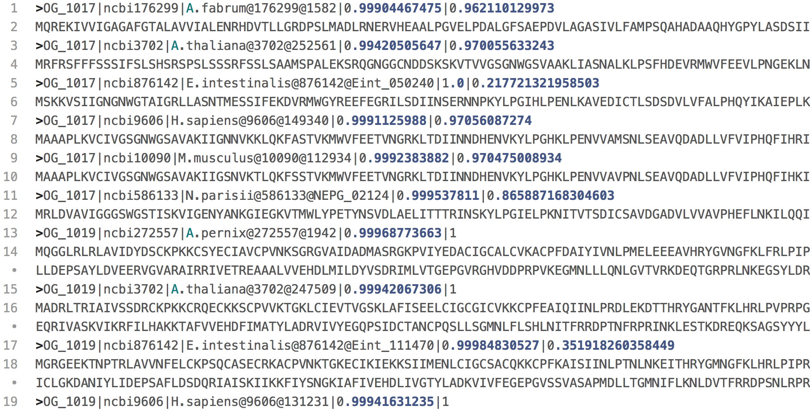 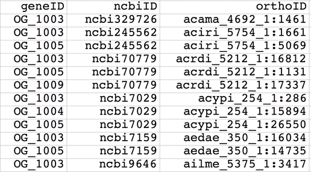 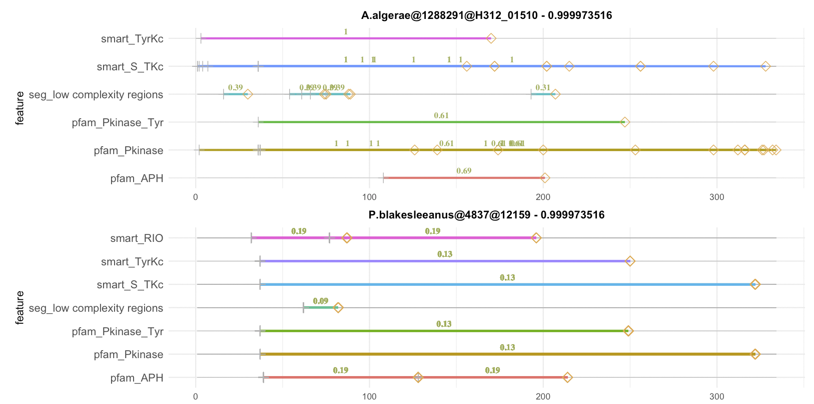Method

Problem: large data set with 1605 seed proteins


OMA API WITH PYTHON
Install the libraries
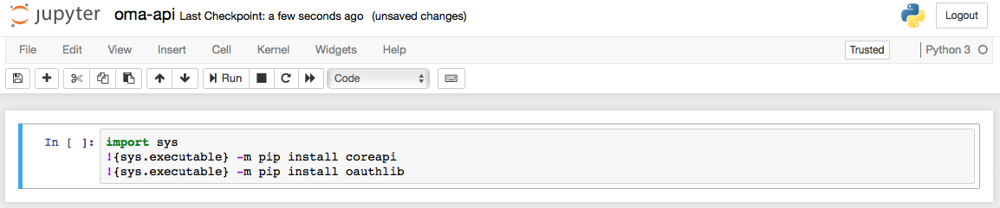Get protein sequence
 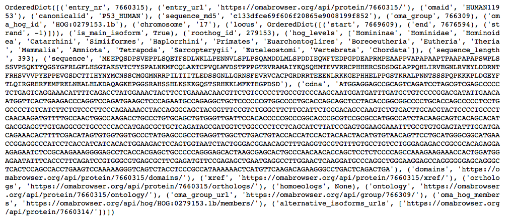
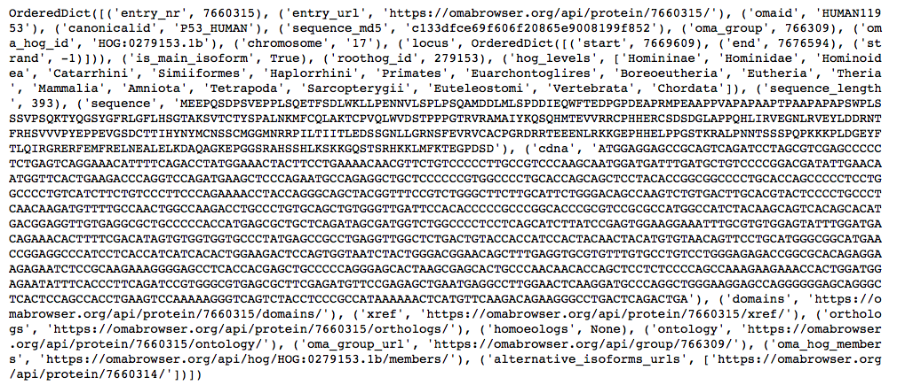
Get protein sequence
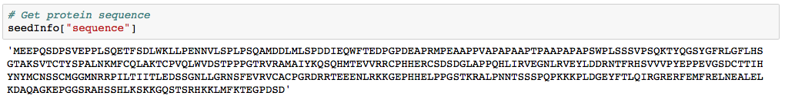 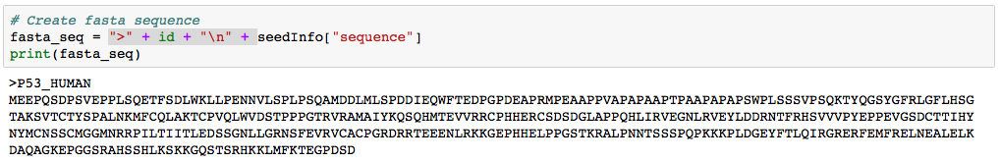Get protein annotation
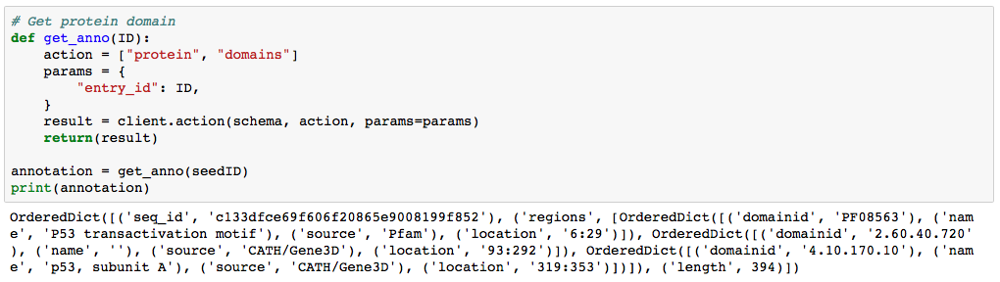 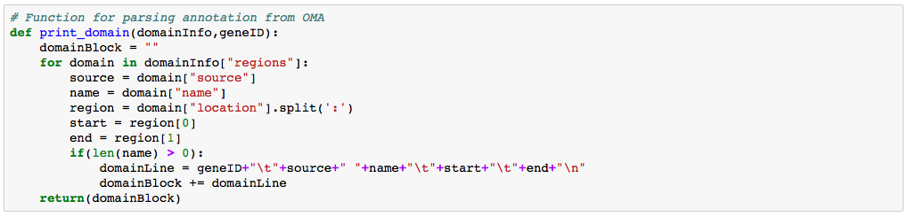 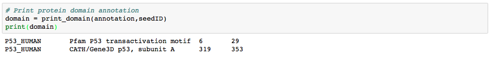Get orthologous group
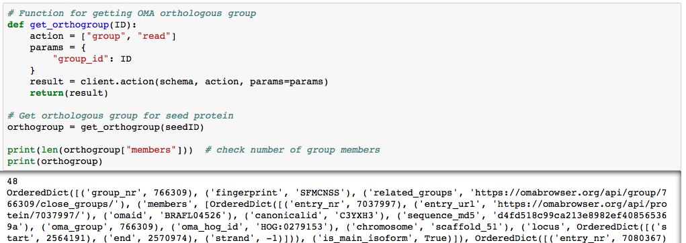 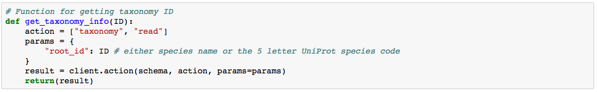 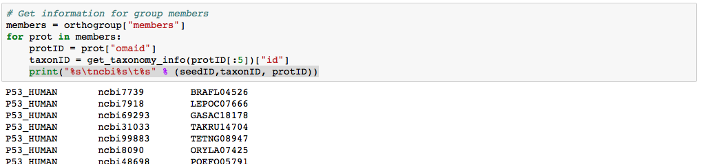Run for multiple seed proteins
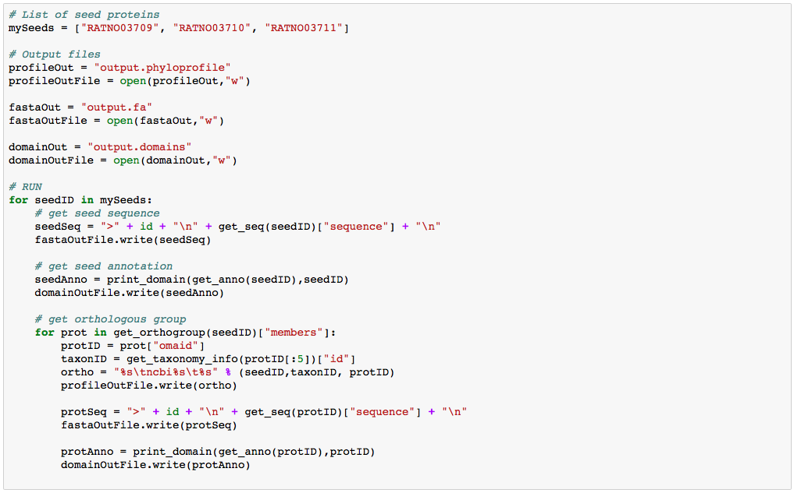Other use cases

- Get sequence info from different databases (e.g. NCBI, PDB,...)
- Perform sequence alignment with e.g. MAFFT, Clustal, T-Coffee, etc.
- Analyse population genetics or phylogenetics
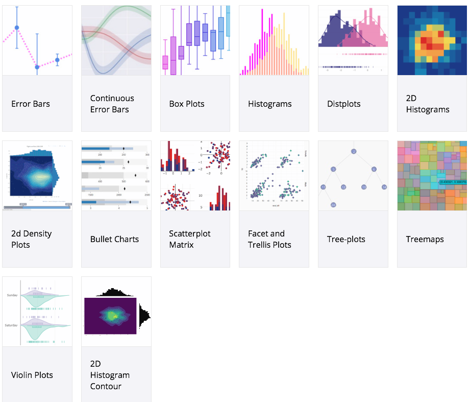
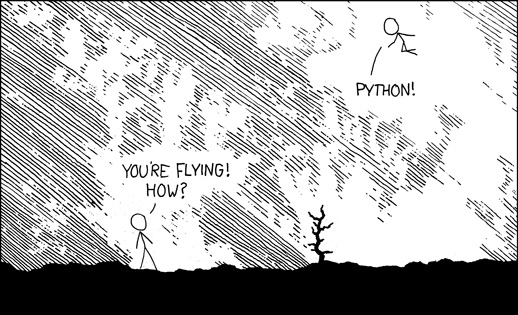
Editors for Python
The Jupiter Notebook
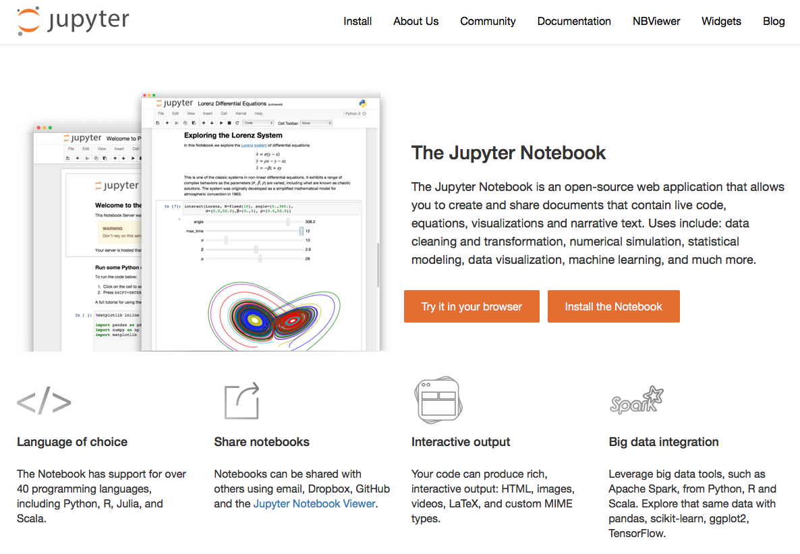Links
to this presentation
https://trvinh.github.io/python_experience/slides
to the presented code
https://github.com/trvinh/python_experience/blob/gh-pages/oma-api.ipynb
to me